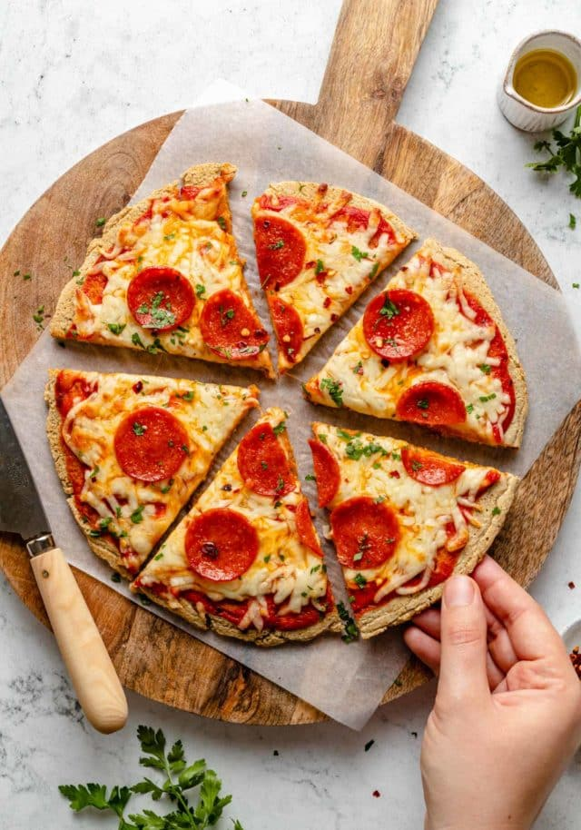

Oat Flour Pizza

Homemade Oat Flour Pizza Crust
Friends, let me introduce you to my new favorite thing: Homemade Oat Flour
Pizza Crust.
This healthy, super easy, hand-held oat flour pizza crust is made with just two
main ingredients and is versatile enough to go with both traditional
tomato-mozzarella toppings and less-traditional pizza situations such as a
bbq chicken pizza or Hawaiian pizza. Dairy and gluten free friendly too!
Ingredients
- Rolled oats. This recipe uses 1 cup of old-fashioned rolled oats. I
don't recommend using any other oat variety to make the crust
- Egg whites. 1/2 cup of liquid egg whites will bind the pulsed oats together
to create a crust.
Steps
- Start this oat flour pizza crust recipe by preheating the oven and heating a large
skillet on the stove. Add all crust ingredients to a food processor.
- Next, blend the crust ingredients until the mixture is fairly smooth and
looks like the picture below. Now, you simply take that oat/egg white
mixture, pour it onto a heated skillet and let it do its thang.
- I recommend shaping the crust with the back of a spoon into a circle and
spread for desired thickness. Let the pizza crust cook for about 5 minutes
and until edges start to brown and the crust is pretty set. The crust
should be lifting some when it is ready to flip. Use a spatula to flip the
crust over in the pan and cook the other side for about 2-3 minutes.
- The end. This is your crust. You just worked a miracle. Haha.. transfer it
to a baking sheet and top it with sauce and all of your favorite
toppings. Bake 10 minutes until cheese is melted and edges of the crust
are slightly browned. Serve up and enjoy!